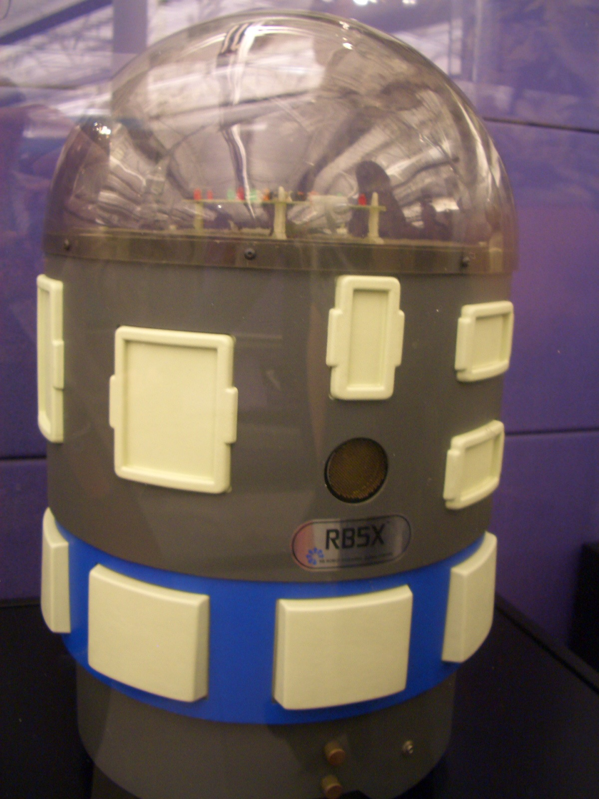
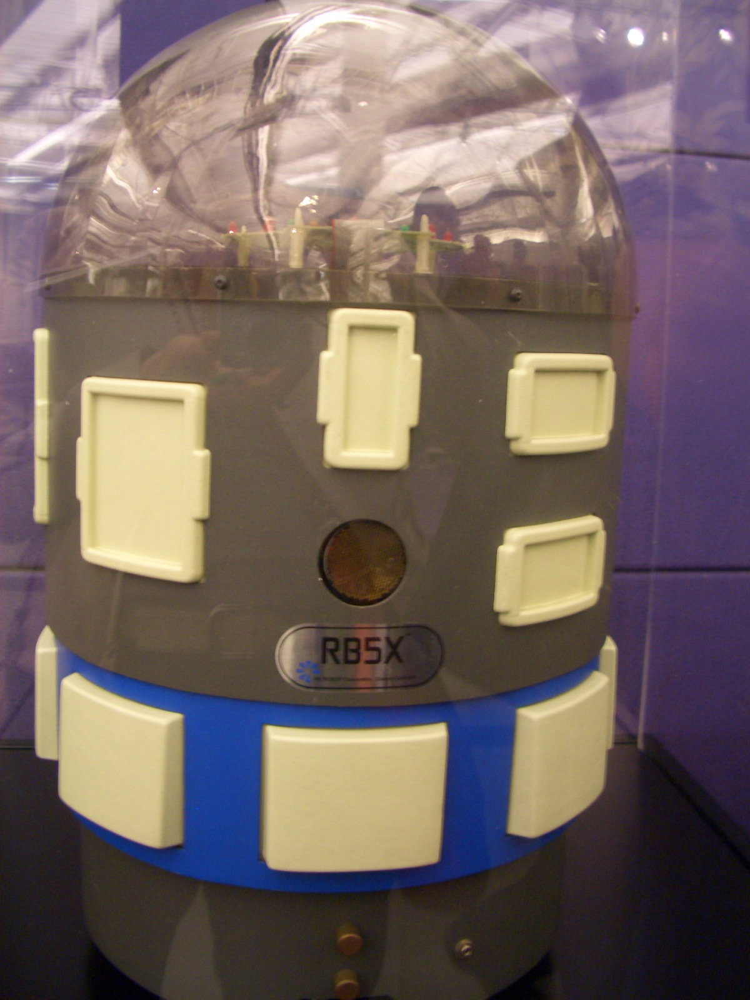
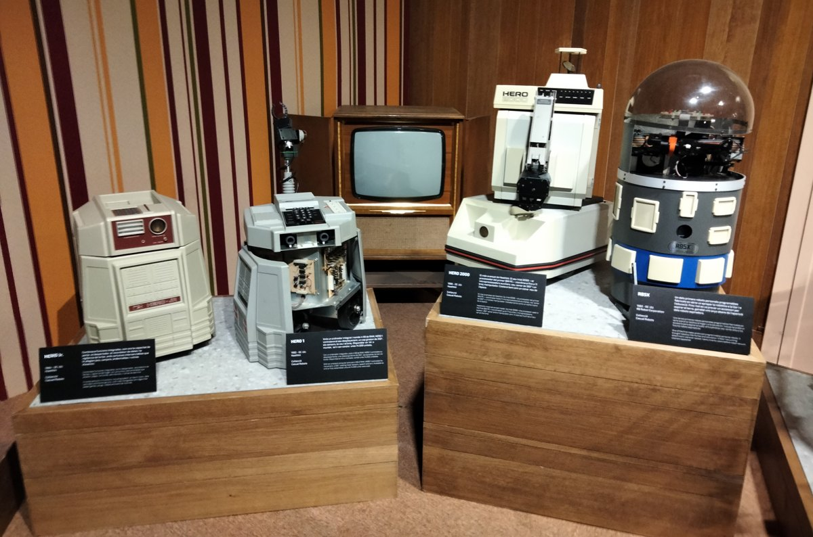

RB5X Personal Robot
A teachable autonomous floor robot you program over a serial cable — code made physical, that learns from experience

Overview
The RB5X is a cylinder-shaped personal robot manufactured by RB Robot Corporation of Golden, Colorado, first released circa 1983. It is an autonomous mobile robot with a transparent dome-shaped top and an optional arm, whose defining feature as a computer interface is that it is programmed remotely over a standard RS-232 serial interface — no on-board keypad or handset — in TinyBASIC or Savvy. You connect it to a computer, type a program, and the robot executes geometric and behavioral commands in physical space.
RB5X is one of the earliest commercial implementations of autonomous mobile robotics (AMR), a concept proposed and demonstrated by author/inventor David L. Heiserman in his 1976 book Build Your Own Working Robot and expanded through his later self-programming and robot-intelligence volumes. Where Topo (the museum's other 1983 floor robot) carries no sensors at all and is a pure output device for code, RB5X carries real perception: eight bumper panels, a photodiode, and a sonic transducer. Era marketing framed it as a robot that "learns from experience" — building behavior from sensor feedback rather than blind execution.
It was reviewed in the January 1984 BYTE ("A General-Purpose Robot Control Language," Prendergast, Slade, Winkless), and hobbyists built interfaces for it (notably an Atari interface). Units are preserved in the Computer History Museum and have appeared in European museum exhibitions, giving it solid institutional provenance.
Deep dive
RB5X commercialized the autonomous mobile robot concept that David L. Heiserman proposed and demonstrated in a series of TAB Books beginning with Build Your Own Working Robot (1976), followed by How to Build Your Own Self-Programming Robot (1979) and Robot Intelligence with Experiments (1981). RB Robot Corporation, founded in Golden, Colorado, turned that research vision into a consumer-sold machine.
RB5X is not a remote-control toy. Its only programming path is a serial cable back to a host computer running TinyBASIC or the Savvy word-recognition language. The user writes code, uploads it, and watches the cylinder move through the room — obstacle avoidance, bumper response, light-seeking — driven by the photodiode and sonic transducer. The interface contract is code-as-choreography: your typed commands become motion, and the only feedback loop is the robot's own sensors acting back on the program.
Topo (1983, Androbot) walked blind — it had no bump panel, no sonar, no feedback driver. RB5X is the documented counterpoint: eight bumper panels for contact, a photodiode for light sensitivity, and a sonic transducer for ultrasonic ranging. Its autonomy is real but modest — it does not chart a room so much as react to it. But that reaction is precisely what makes the interaction novel as a human-computer interface: RB5X is a machine whose "output device" is a body in physical space and whose "input device" is the world pressing back.
Both the contemporary review and the marketing emphasized that RB5X could learn from experience. In practice it could be trained to perform behaviors tied to sensed conditions and to extend those behaviors across a session. It is a primitive but genuine embodied-learning device — the ancestor of everything from autonomous vacuum robots to the machine-learning systems that would follow, and a counterpart to the museum's sense-into-code narrative.
Team & pioneers
- RB Robot Corporation. Manufacturer, Golden, Colorado
- David L. Heiserman. Author/inventor whose 1976–1981 books proposed and demonstrated the autonomous mobile robot concept RB5X commercialized
Media

